Getting Started
FT AML is an Anti-Money Laundering (AML) platform that helps financial institutions detect suspicious activity, screen customers against regulatory watchlists, monitor transactions, manage investigations, and comply with AML/CTF regulations.
1.1Platform Objectives
FT AML is built around a core set of objectives:
- Detect suspicious financial transactions by continuously monitoring customer and transaction activity
- Support banks and financial institutions in complying with applicable AML and Counter-Terrorist Financing (CTF) regulations
- Assess and calculate customer risk based on configurable risk parameters and business rules
- Generate timely alerts for unusual or potentially suspicious activity requiring further investigation
- Enable compliance teams to efficiently investigate, manage, and resolve AML cases
- Minimize false positive alerts through intelligent rule design and optimized risk assessment
- Deliver a scalable, configurable AML platform comparable to leading AML solution providers
1.2Login
- Navigate to the FT AML Platform URL
- Enter your email and password
- Click Sign in
- You will receive an OTP to verify your identity — enter it to complete login
- Once verified, you will land on the Homepage, the entry point to all modules
- Use Forgot Password if login fails after verifying credentials
Secure authentication is the first line of defense for sensitive AML data, and every login is tied to a user account — supporting audit requirements by recording who created, modified, or closed an AML investigation.
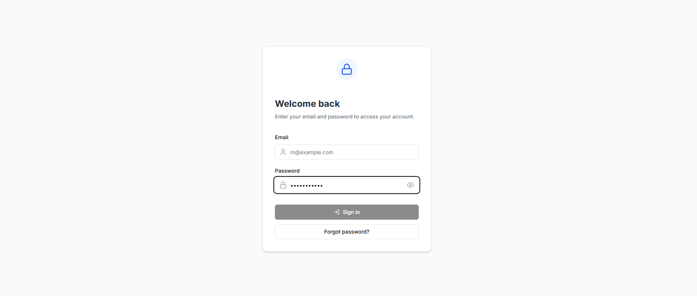
1.3Homepage
After entering valid credentials, the user is redirected to the Homepage. This is the central workspace for compliance teams, giving quick access to every AML module from one place and reducing time spent switching between investigations, screening, and monitoring activities.
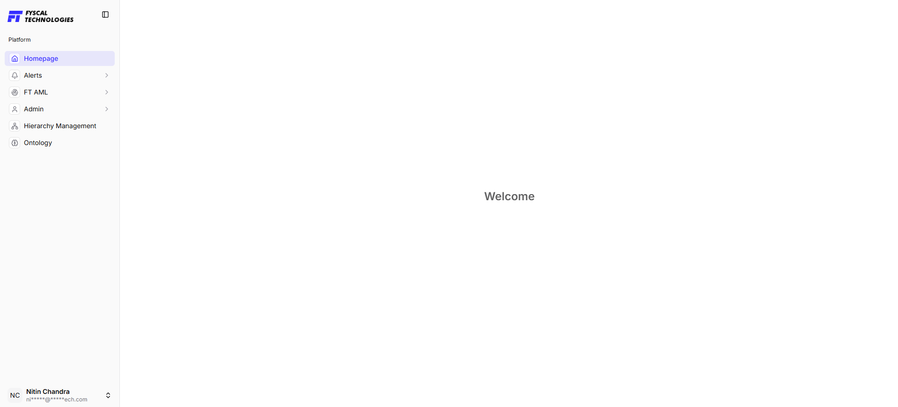
1.4Roles & Access
FT AML can be operated entirely by your own team, or you can hand day-to-day operations to FT AML's Managed Service team. The roles below apply either way — the only difference is who fills them.
- Compliance Analyst — reviews alerts and screening hits, conducts first-level investigation. Can be run in-house or delegated to the FT AML Managed Service team under an SLA.
- Compliance Officer / MLRO — approves SAR/STR filings, reviews SLA and dashboard metrics
- AML Configuration Admin — maintains weightages, severity bands, rules and variables. Can be run in-house or delegated to the FT AML Managed Service team under an SLA.
- IT / Platform Admin — manages user access, ingestion schedules, and platform availability
- Managed Service — FT AML's own compliance operations team, engaged by institutions that prefer to outsource day-to-day screening, monitoring, and first-level triage instead of staffing these roles internally. Escalations and final sign-off remain with your Compliance Officer / MLRO.
1.5Module Overview
After logging in, users can access the full range of FT AML modules from the FT AML menu. The hierarchy below shows how the modules and their sub-features are organized, so you know where to find each feature before exploring it in detail.
- Homepage — the landing workspace after login
- Alerts — a platform-level view of notifications separate from the FT AML Alert Manager
- FT AML — Case Manager, Alert Manager, STR Listing, AI Agent Manager, Name Screening (Watchlist Search, Manual Screening, Batch Screening, Delta Screening, Configuration → Alerts / Screening), Transaction Monitoring (Typology, Variables), Data Ingestion (Watchlist, TMS)
- Admin — profile, roles, and platform-wide settings
- Hierarchy Management — organizational reporting structure and escalation paths
- Ontology — the underlying data model connecting entities, instruments, and transactions
Case Manager
Case Lifecycle
Alert Escalated → Investigator Review → Findings Documented → Disposition (False Positive / Escalate for SAR-STR / Request Info) → MLRO Approval → Audit Record
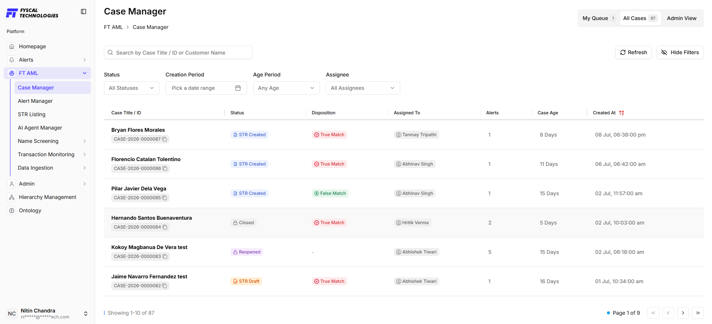
Alert Manager
All screening and transaction monitoring hits route here, ranked by severity and SLA deadline.
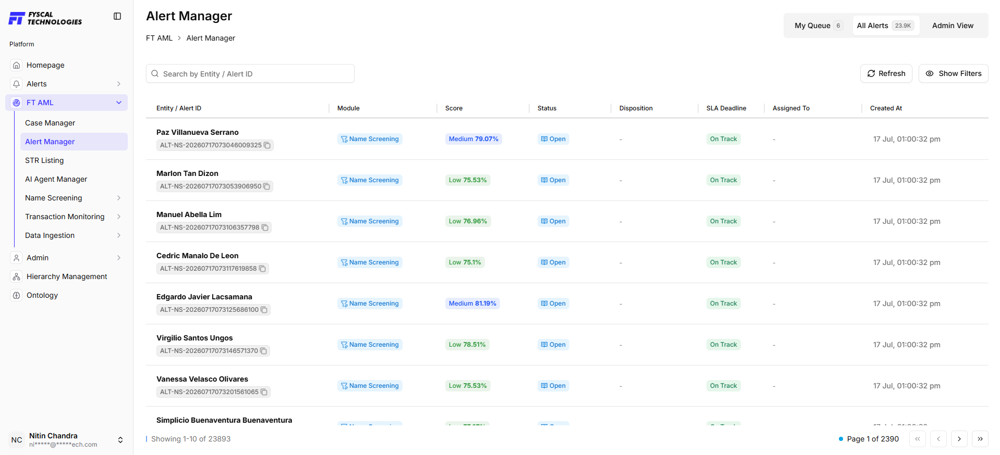
STR Listing
STR Listing is the screen where Suspicious Transaction Reports (STRs) generated from AML cases are tracked. Each row represents one case that has produced an STR, linking the case, the STR reference, who raised it, and the transaction subjects and amount involved.
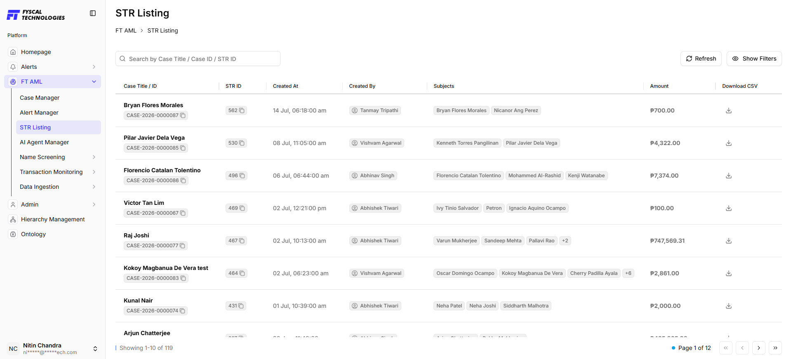
AI Agent Manager
Assists analysts by automating repetitive triage and preliminary analysis. Outputs support investigator judgement — they don't replace analyst sign-off.
Name Screening
Screens individuals and entities against the LSEG watchlist database to identify potential sanctions, PEP, and adverse media matches.
6.1Watchlist Search
Enables users to search for individuals or entities against the LSEG watchlist database. Used for ad-hoc, on-demand lookups — e.g. screening a customer against an international sanctions list before opening an account.
How to use
- Enter the Name of the individual or entity in the search box
- (Optional) Apply additional filters such as Country, PEP Status, Category, or Entity to narrow the search results
- Click Search or press Enter
- Review the list of matching records displayed below
A branch officer searches “John Smith” with Country set to United Kingdom and PEP Status set to Active, to quickly check whether a walk-in customer appears on any current sanctions or PEP list before opening an account.
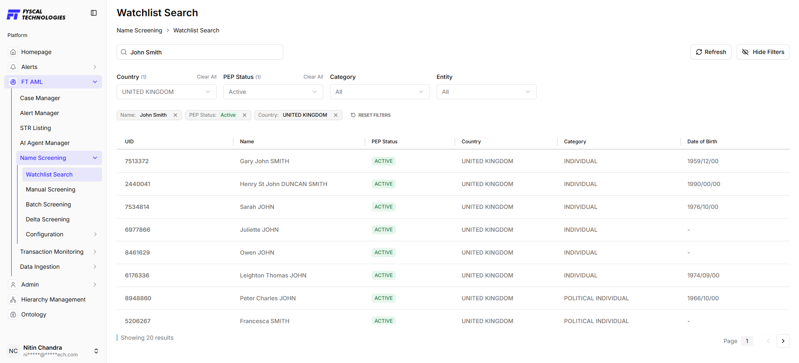
6.2Manual Screening
Allows users to screen an individual or entity by manually entering customer information. The system compares the provided details against the watchlist database using configured matching criteria and weightages to identify potential matches. This gives analysts flexibility to screen immediately during investigations, onboarding, periodic reviews, or whenever customer information changes — outside the scheduled automated screening cycle.
How to use
- Enter the customer's Name
- Select the Entity Type (e.g. Individual or Organization)
- Provide additional details such as Gender, Date of Birth, Citizenship, and Address (optional but recommended for more accurate results)
- Review the matching weightages displayed at the top of the page
- Click Proceed to Screen to initiate the screening process
During onboarding, an analyst manually screens a new corporate client, “Meridian Trading Ltd”, entering its registered address and country of incorporation, and reviews the resulting match score before the account is approved.
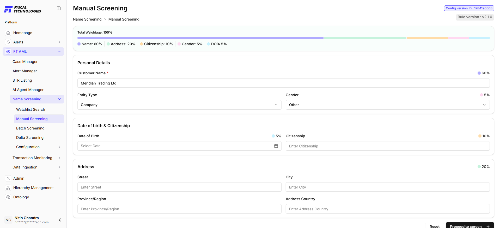
6.3Batch Screening
Screens large customer populations at once (e.g. nightly onboarding batches), letting institutions re-screen millions of records efficiently — e.g. running the entire customer base overnight the moment a new sanctions list is received, instead of reviewing customers individually.
How to use
- Navigate to Batch Screening from the Name Screening menu
- View the list of screening jobs along with their current status
- Use Search or Filters to locate a specific screening job
- Monitor job progress using the dashboard cards (Processing, Completed, Failed)
- Select a job to review records processed, alerts generated, errors (if any), and screening duration
- Use Refresh to view the latest job status, or Change Schedule to modify the batch screening schedule
Each night, the institution's entire retail customer base is submitted as a batch job, so that any new sanctions or PEP list updates are checked against every customer without manual effort.
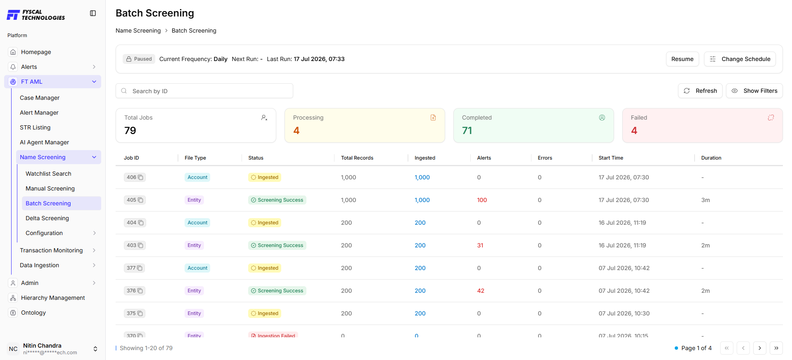
6.4Delta Screening
Automatically re-screens previously screened customers when the watchlist updates — the primary control for continuous, rather than point-in-time, compliance. Only the customers affected by the latest watchlist update are re-screened — e.g. a previously cleared customer is automatically rechecked the moment a new sanctions list is published, without reprocessing the full customer base.
How to use
- Navigate to Delta Screening from the Name Screening menu
- Review the scheduled screening runs displayed on the page
- Use the Search, Status, or Date Range filters to locate a specific screening run
- Monitor the screening schedule, including Next Run, Last Run, and Current Frequency
- Click Change Schedule to modify the screening frequency or timing, if required
- Select a completed run to review customers screened, alerts generated, and execution duration
When a new sanctions list is published, only the customers affected by that update are automatically re-screened overnight, and any new hits appear in the Alert Manager the next morning — with no need to re-run the full customer base.
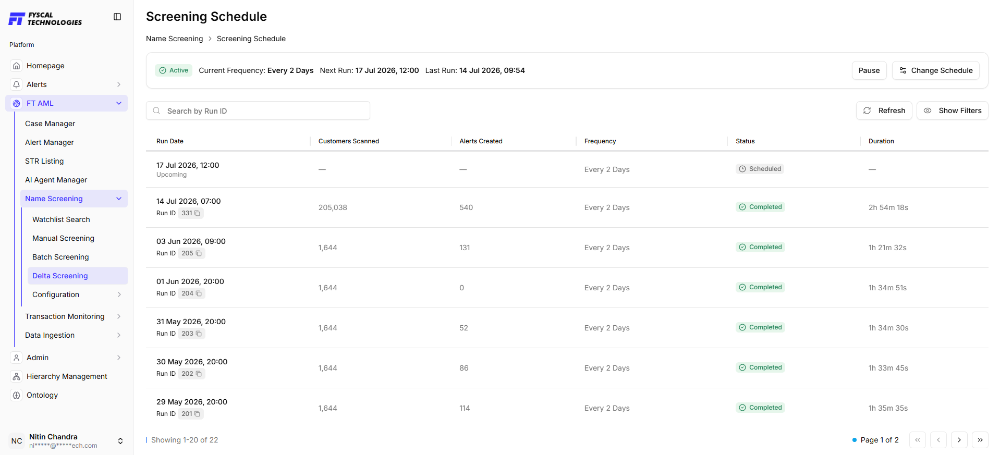
6.5Configuration
Controls how strictly a record must match, and how resulting hits are prioritized for review.
6.5.1 Screening Configuration
Lets administrators configure the matching criteria and weightages used during screening. Each parameter — Name, Address, Citizenship, Gender, Date of Birth — can be assigned a custom weightage to determine the overall match score, so institutions can align screening sensitivity with their internal AML policies and risk appetite. Higher weightage strictness reduces false positives but risks missing true matches.
How to use
- Navigate to Configuration → Screening from the Name Screening module
- Review the active screening configuration and the assigned weightages
- Click Edit to modify the screening configuration
- Configure the weightage for Name, Address, Citizenship, Gender, and Date of Birth
- Expand each section to configure its individual matching criteria
- Save the configuration to apply the updated screening rules
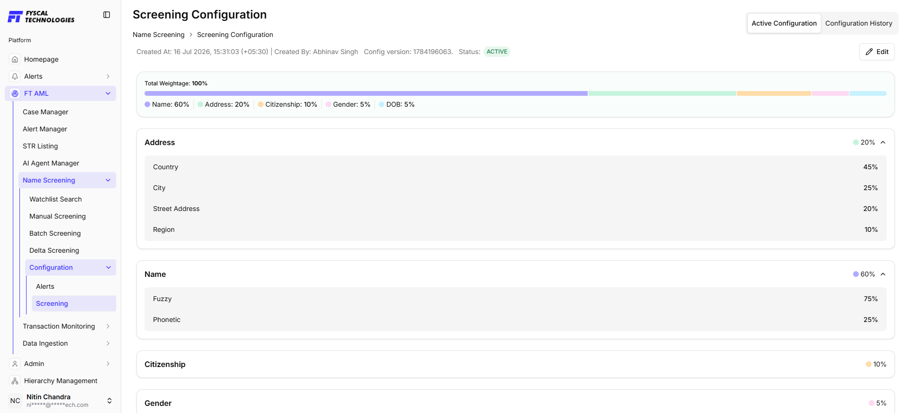
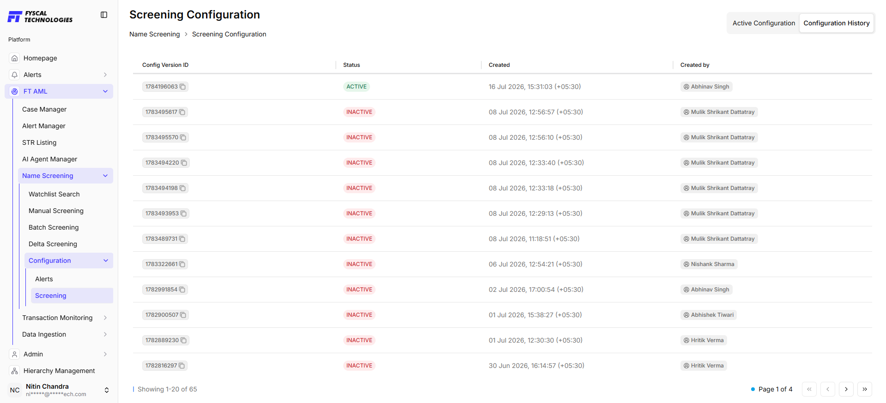
6.5.2 Alert Configuration
Lets administrators configure the alert severity levels generated during screening — defining score ranges, assigning severity levels, configuring SLA deadlines, and enabling auto-hibernation, so organizations can prioritize investigations and standardize alert handling based on risk.
How to use
- Navigate to Configuration → Alerts from the Name Screening module
- Review the active alert configuration and its defined severity levels
- Click Edit to modify the existing alert configuration
- Configure Alert Name, Score Range (Min % – Max %), No Alert option, SLA Deadline, and Auto Hibernation for each severity level
- Save the configuration to apply the updated alert settings
- Select Alert Configuration History to view previously saved configurations
Full configuration history is retained for audit.
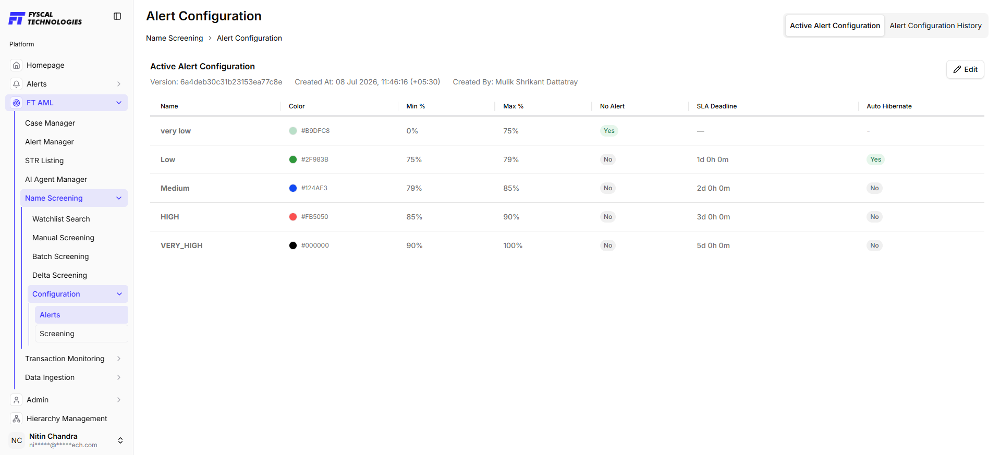
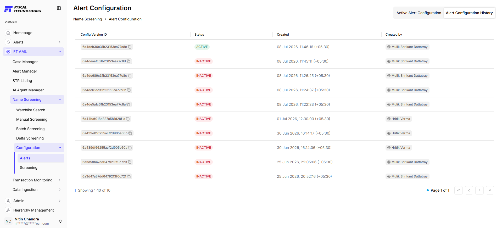
Transaction Monitoring & Rule Engine
Detects suspicious transaction patterns using configurable typologies (rules) built from reusable Variables.
7.1Rule Execution Flow
Transactions Ingested → Variables Calculated → Aggregations Applied → Trigger Conditions Evaluated → Suppression Checked → Alerts Generated → Cases Created
Each monitoring rule is defined as a Typology — a named, versioned pattern (e.g. Structuring, High Value Transfer, Smurfing) built from Variables and Trigger Conditions. The Typology screen lists every rule with its current status (Draft, Shadow, or Published), the typology category it belongs to, and when it was created or last updated.
How to use
- Navigate to FT AML → Transaction Monitoring → Typology
- Search by rule name or rule ID to locate a specific typology
- Review each rule's Status — Draft (in progress), Shadow (running silently for validation), or Published (live and generating alerts)
- Click + New Draft to start building a new rule
- Use the Actions menu to edit, duplicate, or change the status of an existing rule
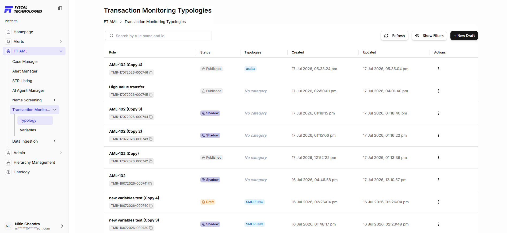
7.2Variables & Aggregations
Variables are named calculations reused across rules — e.g. Count, Sum, Avg, Max, Min, Distinct Count. The Variables module lets users view available variables, search for a specific variable, sort them, and create new ones as required.
- Count(sender_entity_id) · Sum(amount) · Avg(amount)
- Distinct Count(sender_entity_id) · Max(amount) · Min(amount)
How to use
- Navigate to FT AML → Transaction Monitoring → Variables
- Use the Search bar to quickly locate a variable by name
- Use the Sort By dropdown to arrange variables by Updated, Created, or Name
- Review each variable's Variable ID, Created Date, and Last Updated Date
- Click + New Variable to create a new variable for use in monitoring rules
Building variables instead of repeating logic in every rule gives four benefits: Reusability (one calculation, many rules), Performance (compute once, reuse), Readability (a named variable reads better than the raw logic it represents), and Maintainability (change the definition once and every rule using it updates automatically).
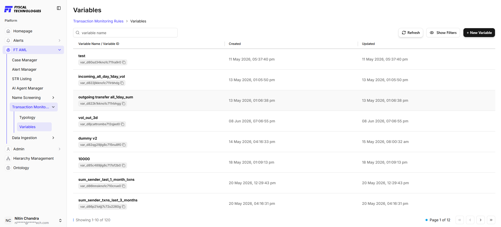
7.3Group By, Look Back & End At
- Group By calculates separately per value — e.g. per sender_entity_id
- Look Back defines how far back analysis starts; End At defines where it stops
- Example: Look Back = 10 Days, End At = 0 Days → analyses the last 10 days
7.4Trigger Conditions
Trigger conditions decide when alerts are created — e.g. count_sender_txns_1_week > 5, amount > 10000, country = 'High Risk'. AND requires all conditions to be true; OR requires any one condition to be true. Values can be a Static Value (fixed threshold), a Variable (calculated), or Ingested Data (a raw transaction field).
A Variable calculates a value; a Trigger Condition checks that value and decides whether to raise an alert. A variable on its own is just information — the trigger condition is what tells the system that information is suspicious.
7.5Suppression, Execution Interval & Dry Run
- Suppression Window prevents duplicate alerts for the same entity within a set period (e.g. 1 hour)
- Execution Interval defines how often a rule runs: Hourly, Daily, Weekly, Monthly
- Dry Run simulates historical execution without creating production alerts — used to validate records scanned, alerts created, and matching entities before a rule goes live
7.6Worked Example
Example variable: count_sender_txns_1_week — the count of transactions made by each sender in the last 7 days. The engine calculates it once per sender, and every rule can reuse it:
| Sender | Transactions in Last Week | Variable Value |
|---|---|---|
| A | 5 | count_sender_txns_1_week = 5 |
| B | 1 | count_sender_txns_1_week = 1 |
| C | 3 | count_sender_txns_1_week = 3 |
Real example — today is 10 Jul 2026. Sender A's transactions:
| Date | Amount |
|---|---|
| 09 Jul | ₹1,000 |
| 08 Jul | ₹2,000 |
| 05 Jul | ₹5,000 |
| 29 Jun | ₹8,000 |
| 20 Jun | ₹4,000 |
- count_sender_txns_1_week (03–10 Jul) = 3
- count_sender_txns_2_weeks (26 Jun–10 Jul) = 4
- Rule: count_sender_txns_1_week > 1 OR count_sender_txns_2_weeks > 1
- Eval: 3 > 1 → TRUE OR 4 > 1 → TRUE ⇒ Alert Generated
7.7More Trigger Condition Patterns
| Pattern | Variable | Trigger Condition |
|---|---|---|
| Amount-based | total_amount_1_day | total_amount_1_day > 100000 |
| Count-based | count_sender_txns_24_hours | count_sender_txns_24_hours > 10 |
| Country-based | — | country = 'High Risk' |
| Combined (AND) | amount, country, count_sender_txns_1_day | amount > 50000 AND country = 'High Risk' AND count_sender_txns_1_day > 3 |
Data Ingestion
Imports watchlist and transaction data feeding screening and monitoring.
8.1Watchlist Ingestion
Provides a complete history of watchlist files ingested into the system, so users can monitor the status of each ingestion process, verify successful uploads, and review ingestion type, source, processing time, and records processed — helping ensure the latest watchlist data is available for customer screening.
Key features
- View the complete watchlist ingestion history
- Search for ingestion records using the filename
- Filter records by Ingestion Type (e.g. Delta, Delete) and Status
- Monitor the processing status of each ingestion job
- Review File Name, Ingestion Type, Source, Status, Start Time, End Time, Total Rows Processed, and Error Messages (if any)
- Refresh the page to view the latest ingestion history
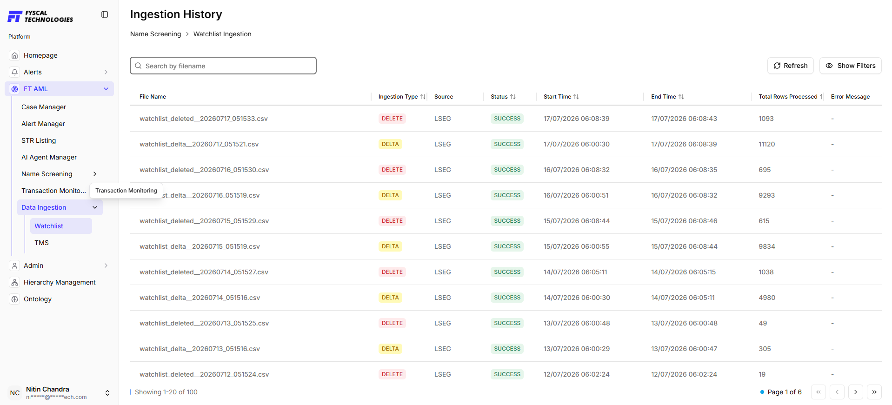
8.2TMS Ingestion
Provides an overview of all files ingested into the transaction monitoring system, so users can track ingestion jobs, monitor processing status, and verify that transaction, entity, and instrument data have been imported successfully — giving visibility into data ingestion health to ensure accurate transaction monitoring.
Key features
- View the status of all TMS data ingestion jobs
- Monitor summary statistics: Total, Processing, Completed, and Failed jobs
- Filter records by File Type and Status
- Review Job ID, File Type, Status, Total Records, Records Ingested, Start Time (UTC), and Processing Duration for each job
- Refresh the page to display the latest ingestion status
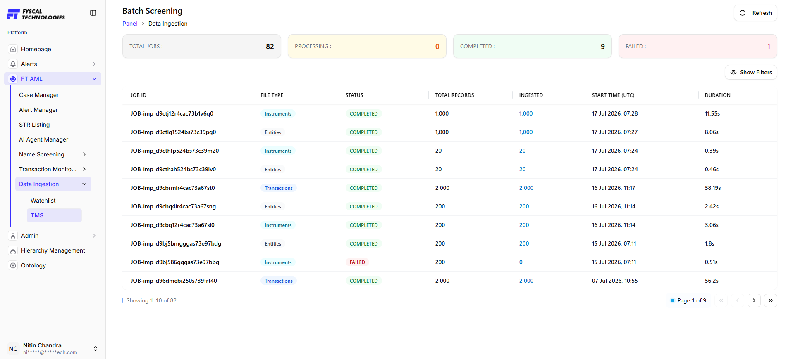
Admin
- Edit profile and contact details
- Manage user roles and permissions
- Review and update screening weightages, severity bands, variables, and rules
- Control notification and preference settings
Hierarchy Management
Defines the organizational reporting structure that AML operations run on top of — who sits above whom, and which unit or branch each user and case belongs to.
10.1What It Manages
Hierarchy Management is a platform-level module (sitting alongside Admin and Ontology, outside FT AML) used to model the institution's organizational structure — branches, teams, and reporting lines — and to map each user and business unit into that structure. Screening, monitoring, and case data all inherit this structure, which is what makes role-based routing and escalation possible elsewhere in the platform.
- Define organizational units (e.g. branch, region, department) and the parent-child relationships between them
- Assign users to a position within the hierarchy, establishing their reporting line and supervisor
- Drive case and alert escalation paths — e.g. an unresolved case escalates automatically to the assignee's supervisor as defined here
- Support segregation-of-duties and maker-checker controls by making reporting relationships explicit and auditable
- Feed dashboard and SLA reporting that needs to be sliced by branch, team, or region
Help & Support
11.1Common Issues & Solutions
| Issue | Solution |
|---|---|
| Login failed | Verify credentials, or use Forgot Password |
| Ingestion job stuck in Processing | Check source feed, click Refresh, escalate to IT/Platform Admin |
| Screening returns no matches | Confirm watchlist ingestion completed successfully |
| Unexpected spike in alerts | Review recent weightage or rule threshold changes |
| Rule not triggering as expected | Run a Dry Run to validate conditions against historical data |
11.2Contact Support
Tell us a little about what you're working on and the team will route you to the right person — typically within one business day.
- Email — hello@fyscaltech.com
- Phone — +65 8080 5424
- Headquarters — Singapore · 68 Circular Road
- Response time — under 1 business day
Thank you for using FT AML.